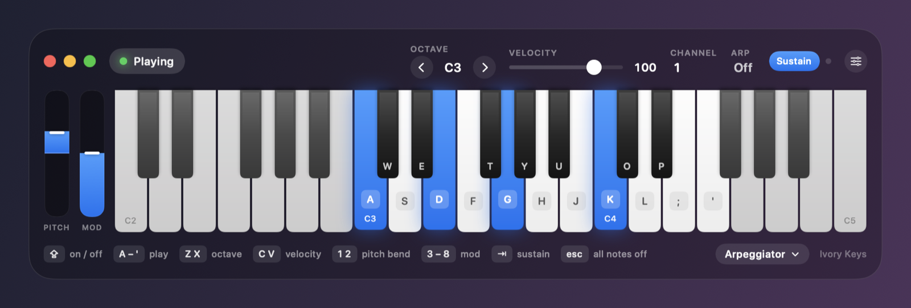
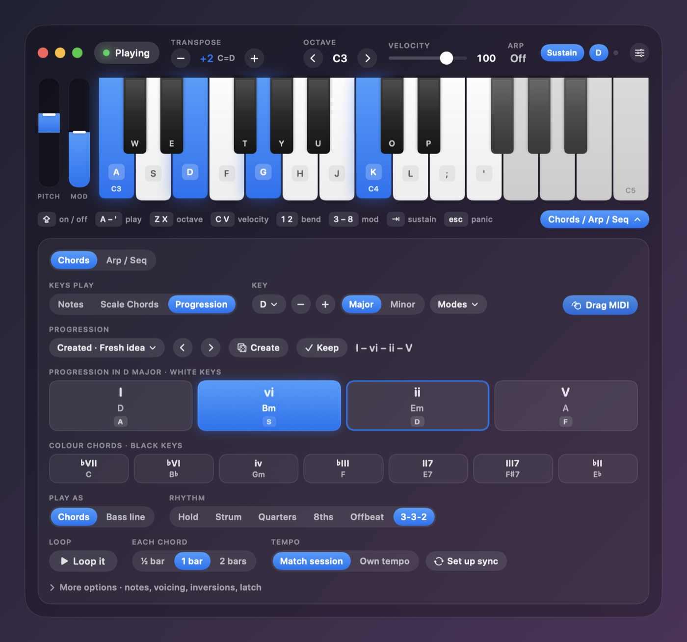
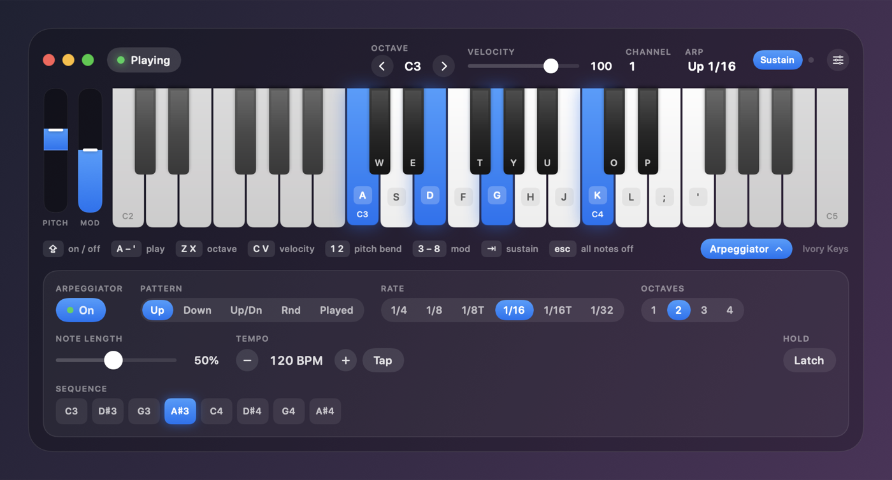
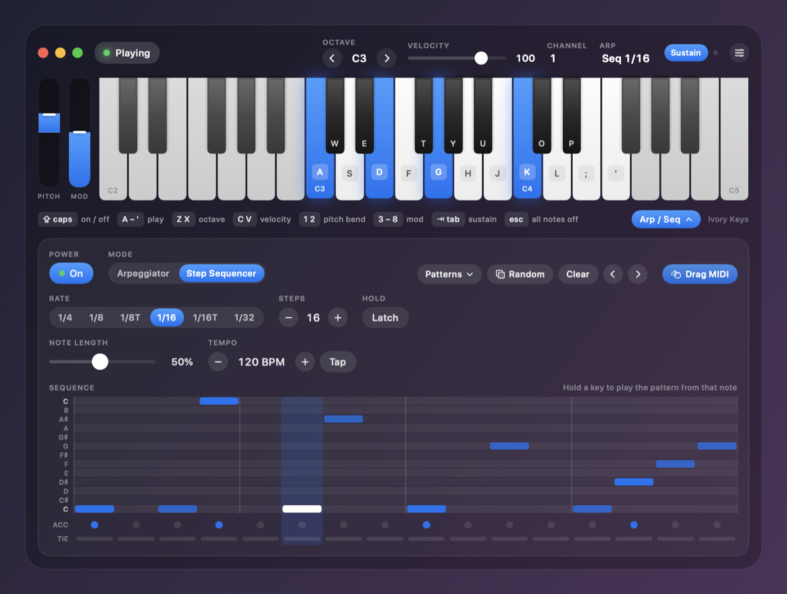
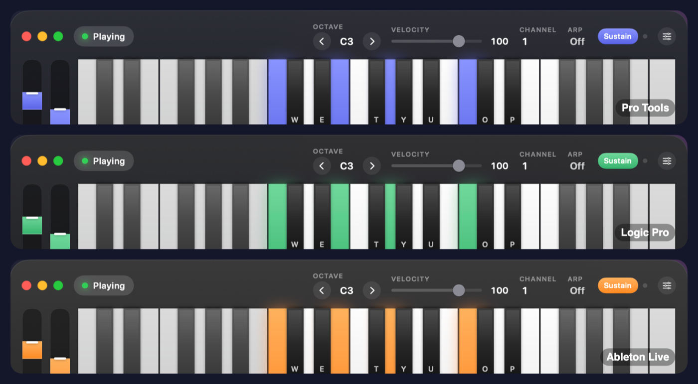

Ivory Keys turns the keys you already have into a MIDI keyboard. It works in Pro Tools, Logic, Ableton and every other DAW, so you can sketch a melody on the couch, on a plane, or anywhere your MIDI keyboard isn't.

Pro Tools has no built-in way to play notes from your computer keyboard. Ivory Keys fills that gap without getting in your way.
While Ivory Keys is on, the playing keys make music instead of triggering Pro Tools shortcuts. Everything else still works as usual, and holding ⌘, ⌃ or ⌥ gives you the normal shortcuts back.
Click “Set Up Pro Tools” and Ivory Keys turns itself on in Setup → MIDI → MIDI Input Devices. There's no IAC bus to configure and no routing to figure out.
Ivory Keys starts hidden when Pro Tools, Logic, Ableton or another DAW opens, and quits when you close it. Press ⌘ + Caps Lock to bring it up, then Caps Lock to switch the keys on and off.
Open Chords under the keys, pick a key and a progression, and each white key plays the next chord. Progressions are written as numbers (I V vi IV, ii7 V7 Imaj7, i ♭VI ♭III ♭VII), so they work in any key, and the black keys add colour chords like ♭VII and iv.

Hold a chord and Ivory Keys plays it as a pattern. Click Chords / Arp / Seq under the keys and every control slides open right there, with the notes lighting up as they play. Turn on MIDI Beat Clock and it locks to your DAW's tempo, so the arp you record lands on the grid.

Switch the drawer to Arp / Seq and pick Step Sequencer and click out a 16-step pattern. Hold any key and it plays from that note, so one pattern becomes a bass line in every key. When it sounds right, grab Drag MIDI and drop it on a track: it lands as a MIDI clip you can edit.

Ivory Keys takes on the colours of whichever DAW it's playing into: violet next to Pro Tools, green in Logic, orange in Ableton, and so on for FL Studio, Studio One, Cubase, Reaper, Bitwig and more.

Lock the keyboard to a scale and every key snaps to a note that fits. Add chords and one finger plays a full triad or seventh.
The layout feels like Logic's Musical Typing, so you already know it.
Set velocity with C V or the slider, and add a little random variation so takes sound less robotic.
Bend with 1 2 and a smooth glide, and set modulation with 3–8. It can also send breath, expression or brightness.
Hold Tab like a pedal, or tap it to switch sustain on and off.
Musical Typing, as in Logic, or a two-row piano with a wider range.
The keyboard floats above your DAW, with a compact mode, key letters and note names.
Channels 1 to 16, plus esc for “all notes off” if anything gets stuck.
Ivory Keys needs keyboard access to turn keys into notes, the same permission any keyboard utility uses. Here's exactly what it does with it, and what it doesn't.
Open Ivory-Keys.dmg and drag Ivory Keys into Applications.
Open Ivory Keys and click Allow… in the welcome window, then switch Ivory Keys on in Accessibility.
In Pro Tools, click Set Up Pro Tools once. Then press ⌘ + Caps Lock and play with A to '.
Any app that takes MIDI input: Pro Tools, Logic Pro, GarageBand, Ableton Live, FL Studio, Studio One, Cubase, Nuendo, Reaper, Bitwig, Reason, Digital Performer and standalone instruments like Kontakt and Arturia. Ivory Keys shows up as a MIDI input called “Ivory Keys”.
So it can hear your keys while your DAW is the app in front, and stop those keys from also triggering DAW shortcuts. Ivory Keys never stores, logs or sends what you type, and it has no internet code.
No. Ivory Keys only takes over the playing keys while piano mode is on and a music app is in front. Caps Lock switches it off whenever you want to type.
Send MIDI Beat Clock to “Ivory Clock”. In Pro Tools that's Setup → MIDI → MIDI Beat Clock, then tick Ivory Clock. Ivory Keys follows your tempo and starts in time when you press play. Without clock it uses its own tempo, with tap tempo.
Two ways. Record it: arm a MIDI or instrument track and press record while it plays (with MIDI Beat Clock on, it stays on the grid). Or drag it: grab Drag MIDI in the Arp / Seq drawer and drop it on a track to get a one-bar MIDI clip. Clicking the button shows the file in Finder instead, saved in Music › Ivory Keys MIDI.
No. Like a hardware MIDI keyboard, it plays whatever instrument is on your record-armed track.
Yes. There are no ads, no trial and no account.
Quit Ivory Keys from its menu bar icon and drag it from Applications to the Trash. You can also remove it from System Settings → Privacy & Security → Accessibility.